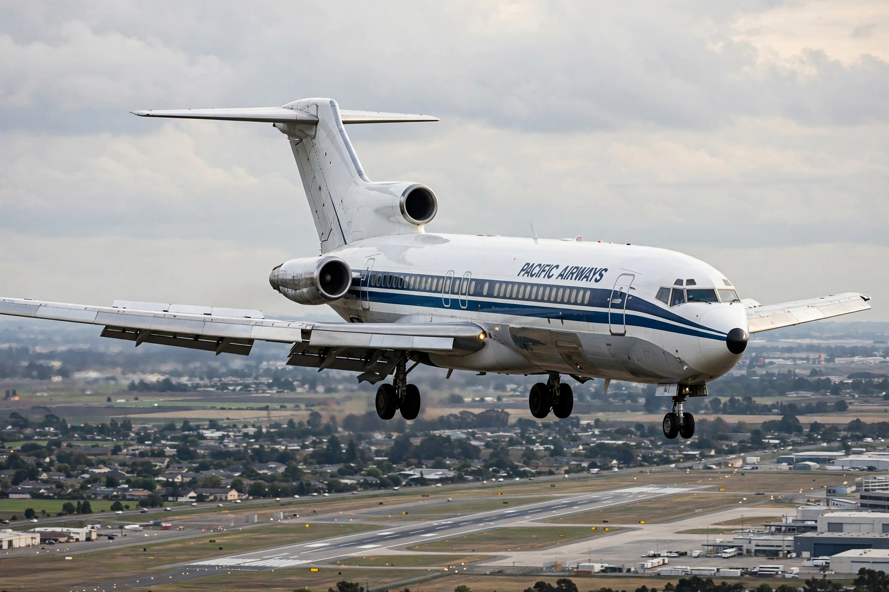

| Boeing 727 | |
|---|---|
| Manufacturer | Boeing Commercial Airplanes |
| First flight | February 9, 1963 |
| Introduction | February 1, 1964, with Eastern Air Lines |
| Status | In limited cargo/VIP service |
| Produced | 1962–1984 |
| Number built | 1,832 |
The Boeing 727 is an American narrow-body airliner developed and produced by Boeing Commercial Airplanes. After the heavy 707 quadjet, Boeing wanted a smaller airliner for short- and medium-range routes serving smaller airports. Development studies began in 1956 and the 727 was launched in 1960. The only trijet produced by Boeing, it first flew on February 9, 1963, and entered service with Eastern Air Lines a year later.

The 727's three Pratt & Whitney JT8D engines are mounted at the rear: two in pods on the aft fuselage and one in the tail cone fed by an S-shaped duct. The arrangement, combined with elaborate triple-slotted flaps, gave excellent short-field performance, allowing the 727 to serve downtown airports such as New York LaGuardia. A ventral airstair in the rear fuselage let passengers board without ground equipment — famously used by hijacker D. B. Cooper in 1971 to parachute from a Northwest Orient 727; the "Cooper vane" was subsequently fitted to prevent the stair opening in flight.
The original 727-100 (131 seats) was followed in 1967 by the stretched 727-200 (189 seats), the most successful variant. The 727 was for many years the best-selling jetliner in the world, with 1,832 built by 1984. It was the workhorse of U.S. domestic fleets into the 1990s, progressively displaced by the 737 and Airbus A320 and by noise rules requiring hush kits or re-engining. Delta retired the last major U.S. passenger 727s in 2003. Conversions as freighters, and a small number of VIP and government aircraft, kept the type flying into the 2020s; Zero Gravity Corporation operates a 727 for parabolic flights.
Typical seating 155 in two classes (max 189); length 46.7 m; wingspan 32.9 m; range about 4,700 km; cruise Mach 0.81.